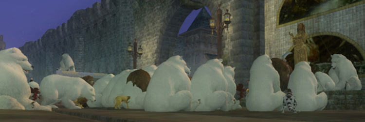

Code of Conduct, Discipline and the Guild Bank

Please observe these simple rules of Holy Might Member Conduct:
1. Treat your guildmates and other players with respect.
Abusive or angry behavior/language towards any other player in the guild will not be tolerated at any time. It is NEVER ok to take your frustrations out on another player - regardless of your personal life, situations, in or out of game stresses, state of sobriety, hormones, etc.
2. Be aware of yourself, and how you’re coming across to observers.
As a guild, we tend to be fun loving. This generally involves a fair amount of rough housing. This is fine and welcome…but hinges on the important factor of whether or not the audience is a willing participant and in on the joke. Know your audience. Those observing from the outside may not understand the context, and so name calling and other general roughhousing in /say, /ooc, /shout, mixed groups, etc. and other chat channels should be considered in that light.
3. Do not, at any time, slander or disparage another player or guild.
This is not acceptable on our forums, general EQ forums, in guild chat, or on our ventrilo server. When you speak publicly in such a manner, whether you intend to or not, you speak for all of us as a guild.
We understand that you’ll have bad groups or run into the odd obnoxious player and need to vent about it. It happens to all of us - please try to keep it to private tells/chat, at a minimum and avoid making accusations or slandering the player in the process. Remember that the thorn in one person’s side is often another person’s friend, or someone struggling with a language barrier, or a younger player.
4. Suspicions of botting/macroeing, cheating, etc. are not permitted in guild chat.
If you suspect a botter within the guild, screenie what you can, log offending behavior if possible and approach a leader privately via. in game email or PM’s on the forum.
If it is outside of the guild, never make a public accusation that could be seen as blacklisting or slander. It is unacceptable and may tarnish someone’s reputation indefinitely. Non-English speakers play the game as well and may not have the ability to communicate with ease. Reporting it to a GM is your best bet, using /report *playername* if possible (this pulls logs directly to SOE's servers and cannot be tampered with, therefore is accepted as the best "evidence.").
It is safer to not make the accusations in the first place. If you truly suspect someone of botting/duping/macroeing, report it to the relevant party and get on with your day.
5. Don’t stoop to personal squabbles, bragging, and otherwise attention-seeking behavior in public venues.
It is understood and accepted that in any given community, not everyone will get along. It benefits both you and the guild if you opt to take the high road in these situations. Your actions make an impression on everyone around you about you AND your guild.
As a raid guild, we are not competitive with other raiding guilds. We don't brag, or behave egocentrically or aggressively. We're here to improve ourselves and have fun beating the game content - the standards we aim to rise above are our own, and in this respect, we're not out to rise above anyone else. No matter how good a player one might be, there is always someone better. Learn from them, improve yourself. Remember that it's Everquest, and we're all nerds in the eyes of the world.
6. We do not take/request strats or favors/loot from other guilds.
While this is technically a "raid rule" this bears repeating for all parts of the guild.
We take pride, as a guild, in researching and working out strategies to raid mobs ourselves. Further, our strats take OUR raid force into account, and won't work for everyone, just as other's strats may not work for us. We do not approach other raid leaders or guild leaders asking them how they beat a particular mob, even if it is offered.
We're not here to take shortcuts from other guilds work. That means if Aftermath is selling loot in Emerald Halls, while we cannot demand you do not buy it, we would very much prefer you did not. You WILL get geared up, you WILL get nice gear - please be patient and save your plat!
6. Guild chat and Ventrilo are for Holy Might members only.
Never give out the Ventrilo information without a leader’s approval. It is for guild use only. Please respect everyone’s confidentiality and keep /gu and ventrilo conversations private within the guild. If we wanted to say it publicly, we’d say it in /ooc.
Discipline
Failure to follow basic guild rules of conduct will be met with these consequences:
First offense: warning.
We understand everyone has bad days and no one is perfect. We will give you a chance to sort a situation out, or remedy the behavior.
Second offense: probation
We’ve asked you to change a behavior. You are aware there is a problem, yet it continues. At this point you will be dropped to Initiate status and or removed from the Elite Legion (DKP privileges suspended, etc.).
Third offense: removal from the guild.
At this point, you are no longer an asset to Holy Might and do not belong in the guild. Better luck elsewhere.
There are some behaviors that override the discipline chain:
1. Blatent abuse/harassment of members.
This includes sexual harassment, threats - both in and out of game. Again, be aware of your audience and respect their boundaries. It is better to err on the side of caution than to dive right in.
2. Misuse of the guild bank/theft, etc.
3. Clear cut acts of “sabatoge.”
- Theft from the guild bank.
- Taking DKP loot and giving/selling to other players.
- Giving away strats to players outside the guild. Officers and Leaders will decide what strats are "ok" to share. We worked hard for the information we have.
- Giving away information about Contesteds, if we're currently doing them. *
- Engineering "drama" between guilds by baiting, flaming, or namecalling on public forums.
*We understand the occasional mistake - someone says “hey what are you raiding” and you say “Pantrilla” then realize they’re from X guild and there’s enough on to go kill it… that’s not good, but mistakes happen.
If we find you’re consistently giving out information, relaying conversation from our guild chat/ventrilo regarding private guild matters to other guilds, you are not here for the betterment of Holy Might and are no longer welcome.
Guild Bank Rules
Guild bank 1: free for all
Any member can withdraw items or money from Guild Bank 1 as needed. Please do not overload the GB with crafting raws. If items are left for over a week or two, they may be removed and mailed to random members or put on the broker by the guild bank seller.
Guild bank 2: for trades and with permission
There is a small amount of money in Guild Bank 2 that can be used for short term loans to buy masters or gear. Please pay it back as soon as possible. Items kept in Guild Bank 2 are for player to player transfers. Any other items (including relic gems) may not be removed without a leader or officer's approval. Do NOT put items you're donating to Guildies in Guild Bank 2, or store crafting raws here.
Guild bank 3: officers
"Petty Cash" fund for masters the guild bank is looking to purchase, raid supplies such as stakes, pearls, or other consumables that may be used/handed out by officers/leaders.
Storage of masters and loot, raid items/cure potions/rares/wolfsbane, stakes, etc.
Guild bank 4: leaders only
The bulk of the guild savings "account" is stored here.
Masters and loot may be kept here as well.
It is not permitted to take from any guild bank to give to alts or players not in our guild or members of other guilds.
Use of the Guild Bank and Funds
The guild earns funds by selling passed-over raid loot or trash drops.
We have a tier system to bidding that can be found in the DKP, Bidding Rules and Structure section. Items generally are passed through the Legion, then to Citizens & Alts, then are put up for sale on the broker. Certain items may be held by the Guild Bank for a period, if they're particularly useful.
The funds that the guild earns are used at the Leadership and Officer's discretion, generally by group agreement in a particular direction. Certain funds are put aside towards future expenses (guild halls, should they ever be added) and fun events. Others are sometimes used to help offset some repair costs from time to time, or to purchase hard to find or useful masters, sometimes put up for DKP.
We have also used these funds as a loan to guild members to purchase masters, in the past. If a loan is made, the guild leadership may elect purchase the item and hold on to it until the loan is repaid. We do ask that loans be repaid in 5 days.
The balance of Guild Bank 2 (Guild Use) should always be above a 4 pp, 30g balance. Please repay your loans from Guild Bank 2 as fast as possible, as it is for use by the entire guild, and someone may need it.